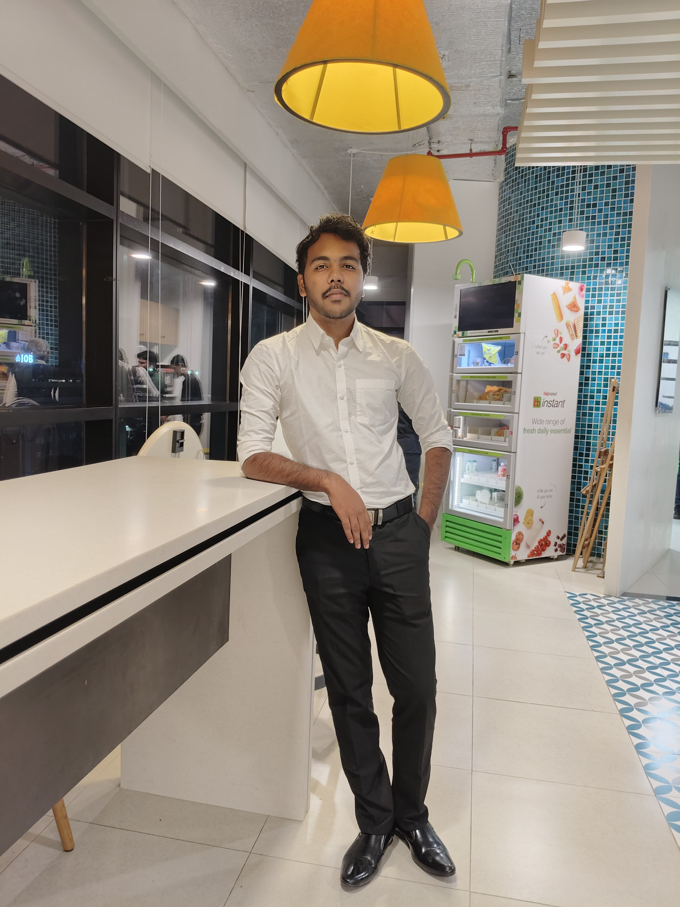

Transforming complex clinical data into actionable insights | Specializing in biomarker analysis, clinical programming, and statistical modeling | Expertise in R, SAS, Python, and advanced data visualization

I'm a passionate Associate Statistical Data Scientist at Pfizer, specializing in transforming complex clinical data into meaningful insights that drive drug development and patient outcomes.
With a strong foundation in biotechnology and bioinformatics, I bridge the gap between biology and data science. My work spans across multiple therapeutic areas including oncology, infectious diseases, inflammation & immunology, and vaccines.
I'm particularly proud of my contributions to high-impact publications in journals like Nature Medicine, Lancet Oncology, and NEJM, as well as presentations at major conferences including AACR, ESMO, ASCO, and ASH.
Chennai, India
Chennai, India
Bengaluru, India
Vellore, India
Hyderabad, India
Vellore, India
June 2018 - May 2023
CGPA: 8.13/10.0
2022 - Recognition for outstanding research contribution at VIT
National DNA Day 2021 - 1st Place out of 50+ teams
Indian Academy of Science - 2022
Udemy - For SAS Beginners
Udemy - AI, Python & R + ChatGPT
Udemy - Excel from Beginner to Advanced
Chemical Physics Letters - Elsevier • 2022
Research on drug discovery using molecular dynamics simulations to identify potential breast cancer inhibitors from natural compounds found in papaya leaves.
View PublicationContributed to exploratory biomarker analysis for multiple high-impact publications in:
Contributed to presentations and posters at major international conferences:
I'm always open to discussing new opportunities, collaborations, or just having a conversation about data science and biotechnology. Feel free to reach out!